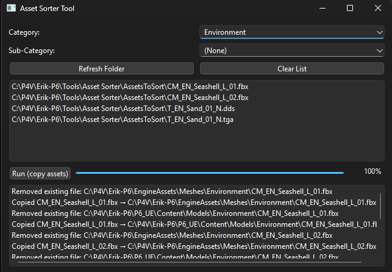

Game Project 6 - TGA
Aliens Stole My Sh**
Trailer of the final project
Project Overview
This was the second collaborative project I worked on, focusing on the development of visual effects and shaders for a third-person game based on Spyro.
Production of the game spanned over 14 weeks(20h/week).
My Contributions
Asset Sorting Tool
The graphical artists in our team spent a large amount of time distributing textures and models across different directories. To streamline this process, I developed a tool that automatically sorted assets into appropriate folders based on their file types and a predetermined category. This significantly reduced the chance of human error and time spent on manual organization and allowed artists to focus more on their creative work.
The tool was built using Python and various libraries for file handling and user interface design. The python script was then built into an executable to avoid the risk of requiring the dependencies. The user would drop their assets into a designated folder, and the tool would automatically sort them into the correct directories on execution based on predefined rules.

Asset Sorting Tool
Houdini Asset Export Tool
Houdini Engine was used via Unreal Engine to generate unique procedural assets for the game.
The problem was that the assets needed to be exported in a specific format for the game engine to utilize them effectively.
I developed a tool that automated this export process, ensuring consistency and saving significant time during development.
The tool was built for Unreal Engine using Python.
General process of tool:
- Create a list of all collision and render meshes
- Export assets as fbx in both Unreal Engine and Custom Engine content folders
- Re-bind exported render meshes to corresponding static mesh actor
- Add PhysX component to render meshes and bind collision mesh
This tool significantly reduced the amount of clicks from over 800 down to just a few, allowing the team to focus on creative tasks rather than repetitive manual processes.
Compute Shaders
To optimize performance I implemented compute shaders for the volumetric fog. This allowed for more efficient rendering of the fog effects while maintaining visual quality.
Early iteration of volumetric fog
Final implementation of volumetric fog
Key Learnings
Through this project, I learned the impact of automation on productivity and the importance of efficient tooling in a fast-paced development environment.